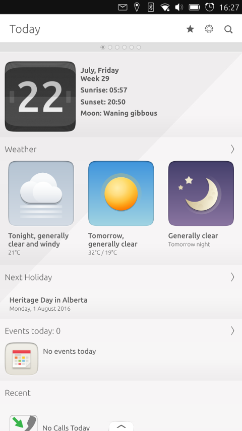
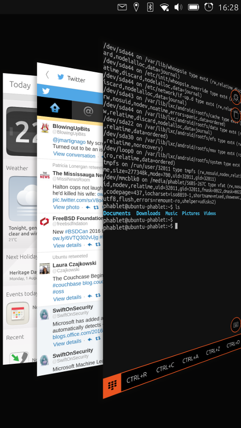
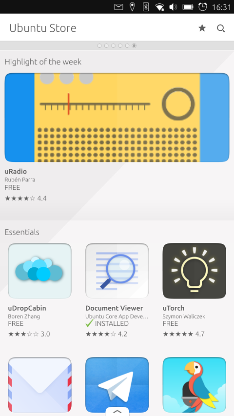
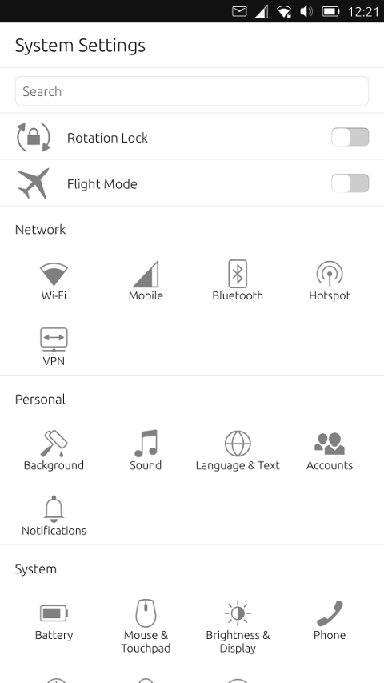
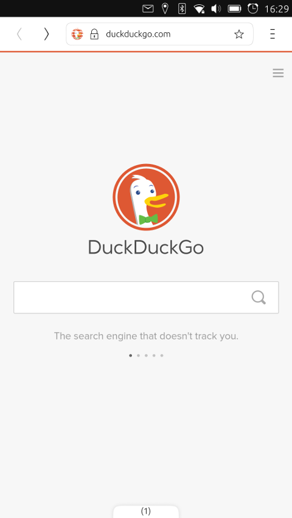
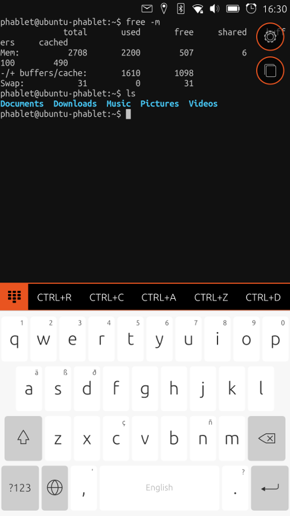
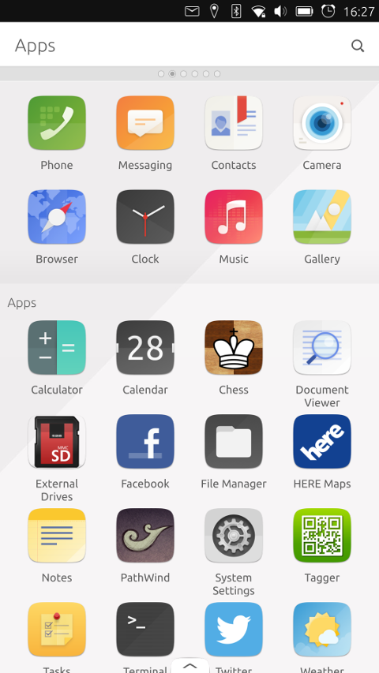

Ubuntu Phone - The Meizu Pro 5
 In many ways, for me, smart phones are the realization of a childhood fantasy: computers small enough to fit in a pocket and powerful enough to perform common computing tasks. There is a certain amount of wonder I feel when I look up trivia, get directions or play chess on a device that can sit in my pocket and only needs to be recharged once every day or two. However, while I greatly admire the technology that goes into a smart phone, the experience often suffers from dozens of small issues.
In many ways, for me, smart phones are the realization of a childhood fantasy: computers small enough to fit in a pocket and powerful enough to perform common computing tasks. There is a certain amount of wonder I feel when I look up trivia, get directions or play chess on a device that can sit in my pocket and only needs to be recharged once every day or two. However, while I greatly admire the technology that goes into a smart phone, the experience often suffers from dozens of small issues.
Over the years I have tried most of the major smart phone platforms. While each had their strengths, they also introduced frustrations which sent me on to another platform. Early Blackberry phones I found bulky and difficult to navigate. While I found more modern Blackberries much more comfortable and I enjoyed their physical keyboards, the Blackberry company seems to be killing off their classic phones in favour of touch screens and giant square devices that won't fit in my pocket. I briefly tried a few generations of the iPhone, but never felt comfortable with the interface (iOS seems to interpret my touch gestures as vague suggestions) and I found it difficult to find ways to perform common tasks. The iPhone also feels uncomfortably locked into the Apple ecosystem, making it a poor fit for me. Android is the platform I have used the longest. My first Android regularly crashed and lost its wi-fi connection. My most recent Android is much more stable, but still loses its network connection and is bundled with software I cannot remove which insists on nagging me on a regular basis. I very briefly tried a Windows phone and while I found the interface sometimes had the familiar feel of a desktop computer, the illusion of familiarity did not hold up. The Windows phone felt like a Barbie doll - a recognizable imitation of a familiar concept, but warped and stiff, ultimately something I'd be embarrassed being seen with on a date.
For the past few years I, like many other Linux enthusiasts, have been looking forward to a more pure mobile GNU/Linux experience. Ubuntu phones started appearing in Europe last year, but the models from Bq appear to work on frequencies not compatible with (or not ideal for) North American mobile networks. Meizu has launched the Meizu Pro 5 which is available in Android and Ubuntu flavours. The Meizu phone appears to offer complete compatibly with mobile networks in Canada and the United States of America and I was eager to try it. Upon request, Canonical was kind enough to send me a Pro 5 model to explore and what follows are my impressions of the device.
First impressions
The Meizu Pro 5 arrived in a simple, black box with "PRO 5" written on the cover. The box contained the phone itself, a power-to-USB adapter and a USB-C cable. There was also a small piece of paper with Chinese characters on it which I believe was the warranty. There was no instruction manual. The Pro 5 is 156.7mm x 78mm x 7.5mm in size, making it almost an inch (2.5cm) taller than my existing Android Moto G device, and nearly half an inch (1cm) wider. The Pro 5 is a few millimetres thinner than my Moto G and a touch lighter, weighing in at 168 grams. This makes the Pro 5 quite a bit longer and not always as easy to slide into a pocket, but it feels nicer in my hand.
The Pro 5 has two cameras, a 20 megapixel rear camera and a 5 megapixel front camera. A USB plug is located at the bottom and a headphone jack can be found at the top of the device. The power and volume rocker are placed on the right with a SIM/microSD card tray on the left. The tray can hold two cards, enabling us to insert two SIM cards or a SIM and a microSD card for additional storage. The positioning of the volume and power buttons are reversed on the Pro 5 compared to my Android phone, placing the power button closer to the bottom of the device.
The Pro 5 runs the mobile edition of Ubuntu 15.04 and offers 3GB of physical RAM. About 1GB of memory is required to run the phone with its default scopes and settings, leaving us about 2GB of space for applications and other features. The device offers approximately 30GB of internal storage with 26GB of the space still free. The device retails for $369.99 (USD).
The Pro 5 boots in about ten seconds, briefly showing us the familiar Ubuntu loading screen fans of the Ubuntu Desktop edition will recognize. The first time we start the device, we are asked to select our preferred language from a list. We are then given the option of connecting to nearby wireless networks. The device next asks if we would like to enable the GPS. (We can enable/disable the GPS feature later through the phone's settings panel.) We are then asked to select our time zone from a list and, optionally, we can enter our name. The last two screens in the initial set up process give us the chance to lock the phone with a passcode and to optionally send crash reports to the developers. With these steps completed we are brought to a screen called the Today scope.

Ubuntu Phone 15.04 -- The Today scope, Ubuntu's home screen
(full image size: 278kB, resolution: 1080x1920 pixels)
I will come back to the concept of scopes, which are similar to desktop widgets, in a moment, but first I want to go over navigating the Ubuntu mobile operating system. Ubuntu tends to avoid using buttons or things we tap. Instead, wherever possible Ubuntu uses swiping gestures to navigate and control the interface. Short swipes to the left or right cycle us through open scopes. A swipe from left-to-right brings up the launch bar, which looks and acts much like the Unity launch bar in the Desktop edition of Ubuntu. A gesture from the bottom of the screen brings up any options the current application or scope supports. A swipe from the top of the screen downward brings up the global settings and notification area. At the bottom of the device there is a physical home button and pressing this button brings up the application launch bar on the left side of the screen. A long swiping gesture from right-to-left shows us all the open applications windows. When on the window overview screen, pushing an application window up closes the program. Moving our finger left or right cycles through the open windows. Tapping an open window gives it focus.

Ubuntu Phone 15.04 -- Switching between app windows
(full image size: 749kB, resolution: 1080x1920 pixels)
All about scopes
I have used the term scope a few times now and I feel it is a concept worth exploring. From a technical perspective, a scope acts a lot like a desktop widget, a plasmoid (for KDE users) or an Android widget. A scope is basically a small program which sits in the background and provides quick access to information. A scope (or widget) might show us the local weather forecast, a Twitter feed or our CPU's usage statistics. On most desktops, and on Android devices, a widget is usually fairly small, allowing us to fit many on the screen. With Ubuntu's mobile operating system, a scope takes up the entire screen, it is a full screen widget. On Android the user has five home screens where we can place multiple widgets and icons. Ubuntu can have a virtually limitless number of scopes, each one taking up a full page.
From a practical point of view, Ubuntu's scopes give the user quick access to weather forecasts, music and calendar information. Scopes can also provide us with news, a way to launch applications and quick access to our phone's photos.
The heart of the Ubuntu experience is the Today scope which acts as the device's home page. The Today scope, by default, shows us the current date, local weather, a summary of recent calls & messages and news from various sources around the world. The Today scope can be customized by pulling up the options tray from the bottom of the screen and can show as much or as little information as we like. When I first started using the phone I noticed the Today scope showed temperatures in the weather forecast in Fahrenheit rather than Celsius. This can be adjusted by changing our selected language in the device's settings panel and restarting the phone.
Ubuntu offers us many other scopes. By default there are scopes for viewing photos, finding music, browsing (and launching) installed applications and finding videos. We can add new scopes, remove existing ones and change the order in which scopes are shown through the options tray at the bottom of the scope screen.
What about apps?
While Ubuntu does place focus on its scopes, the platform supports and includes more traditional phone applications (or apps). Applications can be launched from the Apps scope or from the launch bar. Open applications can be pinned to the launch bar for future quick access by holding the application's icon and selecting the Pin option in the menu that appears. The operating system gives us access to the Ubuntu Store where we can find over 1,000 additional apps and scopes. We do require a user account through Ubuntu One to install or update apps. Creating an account is free and can be done through the phone.
I found Ubuntu Store to be easy to navigate. The interface is similar to Google's Play store or the GNOME Software package manager. Tapping on an application's icon brings up a full screen description which includes screen shots, a link to the software's web page, licensing information and the application's size. Programs can be installed or removed with the tap of a button. Installed items can be launched from their description page.

Ubuntu Phone 15.04 -- Finding new applications in the Ubuntu Store
(full image size: 496kB, resolution: 1080x1920 pixels)
One aspect of Ubuntu I greatly appreciated was that I could remove unwanted applications, including the ones bundled with the device. On most builds of other operating systems there are programs baked into the operating system which cannot be removed and which may nag the user. Ubuntu allows us to get rid of programs we do not want.
Another feature of Ubuntu I like is the mobile operating system installs applications without giving them permission to access anything by default. When an app wants to access our contacts, Google account or camera the app must ask us for permission. This gives Ubuntu a fairly fine-grained security model that denies by default. We can revoke permissions we have already granted by visiting the Security & Privacy screen in the settings panel.
Migrating from Android to Ubuntu
For me, one of the big questions going into this review was how difficult it would be to transition from one mobile operating system to another, specifically Android to Ubuntu. I was uncertain if my contacts, calendar appointments and photos could be transferred between the two devices. I wondered if I could find similar applications and settings when switching to the new device.
As it happened, the migration was fairly straight forward. There are a few ways to copy contacts into the Ubuntu phone. People who have a Google account can simply sync their address book to Google and then link the Google account to their Ubuntu device. This can be done through the Users module in the Ubuntu settings panel. Alternatively, we can export contacts from the Android device, copy the archive to a desktop computer and then over to the Ubuntu phone. The contacts file can then be imported through Ubuntu's Contacts application. Copying the calendar is similarly straight forward for anyone with a Google account as the Ubuntu calendar can sync with Google's on-line calendar.
I like that Ubuntu provides permission control over on-line accounts. Not just any application can access a Google account that has been linked to the phone. Each application must be explicitly granted permission to access Google's address book, YouTube information and other synced items.
For the most part, settings and features on the Ubuntu device had direct parallels to settings and features on my Android device. One of the few changes I had to get used to is Android has three volume controls. One handles the ringer and messages, another adjusts alarms and a third is for media. At first it seemed as though Ubuntu had just one master volume control. However, I soon found the volume control in Ubuntu's settings panel adjusts the ringer volume and audio/media output. The alarm volume is handled separately by the Clock application and its audio volume is adjusted independently from other applications.

Ubuntu Phone 15.04 -- The settings panel
(full image size: 155kB, resolution: 1080x1920 pixels)
Calling and texting
Making and receiving phone calls works about the same on the Ubuntu phone as any other modern smart phone. The calling application can be accessed from the app launcher. We can initiate calls by dialing a number on a touchpad or by accessing the address book and tapping a phone icon next to the contact name. Incoming calls pause any other task and we can swipe left to ignore the call or right to accept. A small button near the bottom of the screen disconnects a call in progress. There are other buttons for switching on speaker phone and muting a call. The audio quality of calls was good. With Android phones I can usually clearly hear a caller from several feet away when the volume is at 40%. The Meizu Pro 5 audio levels were lower and I could hear callers from about a foot away with 60% volume. I was pleased to find the Ubuntu touchpad worked flawlessly when navigating automated answering services, while all the Android phones I have used tend to shut off the display while I am punching in a number.
Texting works on Ubuntu about the same as on other smart phones, but the way we handle past messages is a little different. Once a message has been sent, we can swipe it to the left to get meta information on the message or to copy its contents to the clipboard. Swiping to the right gives us the option of deleting the old message. Images, videos and contacts can be attached to texts, either from within the messaging app itself or by visiting the gallery or address book and tapping the share button.
One feature I grew to enjoy was the way Ubuntu offers us a short-cut for replying to text messages. When a new text comes in, the phone notifies the user and a green envelope appears in the notification tray at the top of the screen. We can pull down the notification area and read the message. We can also write a reply in a text box next to the message and send it from within the notification tray. This means we do not need to switch from our current task to the messaging app and back again. We can pop down the tray, write a quick reply and push the tray back up, returning to the task at hand.
Battery and performance
The Pro 5 offered pretty good battery performance. When the phone was in semi-active use (checking messages, watching videos, sending tweets and listening to music), the battery lost around 5% of its charge per hour. While left to sleep during the night, the battery drained 10% in ten hours (1% per hour). When recharging through a USB cable attached to my computer, the Pro 5 gained 20% of its battery charge each hour and would presumably recover from a completely drained battery in five hours.
The Pro 5 is a fast device and the interface was quite snappy. Switching between apps and scopes happens very quickly, new programs are quick to load and browsing the web was a fairly pleasant experience on the Pro 5. It did not seem to matter how many applications I loaded on the device, the interface was always responsive.

Ubuntu Phone 15.04 -- The phone's default web browser
(full image size: 92kB, resolution: 1080x1920 pixels)
Say cheese
The Pro 5 has two cameras, a high quality rear-facing lens takes 20 megapixel images while the front-facing camera takes 5 megapixel photographs. The picture quality was good, at least to my non-photographer eyes. The camera performed passably well in both lit and dim environments. What stood out about taking pictures was the application though. The Ubuntu camera app, like all Ubuntu apps, has an options tray at the bottom of the screen. These options are clearly labelled and easy to toggle. I found the experience pleasantly straight forward compared to Android's camera application, which involves turning dials and swiping a tray of vague icons in from the side. With Ubuntu the experience was more akin to using a simple image editor than a mock-up of a classic analogue camera and I liked that.
Software updates
A common problem which plagues a lot of people on both Android and iOS is dealing with software updates, particularly to the base operating system. Friends who use iPhones often tell me horror stories about upgrading their phones through iTunes while Android users tend to suffer from a lack of upgrades as most phone providers push out updates (or not) independently of Google. It appears as though Ubuntu phones get their software updates directly from Canonical and the Ubuntu Store. Going into the phone's settings panel we can find a configuration module called Updates. Tapping the Updates button will check for software upgrades and we can choose whether to have updates installed manually or automatically. During my time with the Pro 5 there was one upgrade made available, 220MB in size. The update installed without any problems.
Miscellaneous observations
The Pro 5 ships with a web browser. The browser doesn't display any branding and it is a light, effective browser. There are no plugins or fancy features, just a straight forward browser with bookmarks. We can set the browser to use a variety of search engines, including Google (the default), Bing, DuckDuckGo, Yahoo and a few others. Alternative web browsers can be found in the Ubuntu Store.
For people like me who want to use a command line, there is a Terminal application in the Ubuntu Store. The phone's terminal works about the same as a virtual terminal on Ubuntu Desktop. The usual command line tools are available, with the exception of manual pages. To perform actions as the device's administrator we can use the sudo command. Ubuntu's phone uses the same directory structure as the Ubuntu Desktop and Server editions. The user has a home directory located at /home/phablet. In the home directory we find a series of folders: Downloads, Documents, Music, Pictures and Videos. When an external storage card is attached to the phone, files saved to the card can be accessed under the /media directory.

Ubuntu Phone 15.04 -- Accessing memory usage information from the terminal
(full image size: 159kB, resolution: 1080x1920 pixels)
Ubuntu's mobile operating system can play media files, including mp3 audio files, by default. There is a built in media player for music and we can gain access to other media sources, such as YouTube, through scopes and web apps.
The Pro 5 has a light on the face of the device which flashes when there are notifications waiting, such as calendar events and new text messages. Notifications usually appear in small bubbles at the top of the display and are often accompanied by a brief sound. We can disable notifications from any app through the settings panel using the Notifications module. So far as I could tell, notifications from applications can only be toggled on/off for each app, I could not find a way to visually display new notices while also muting them.
I was able to pair my Ubuntu phone with other devices, such as an Android phone, over Bluetooth. However, I was unable to send or receive photos or contacts over the Bluetooth connection. If I wanted to send contacts to an Android phone from Ubuntu, I had to use Google's sync service. I could import contact archives from Android into Ubuntu, but I could not find a way to export contacts from the Ubuntu device into an archive to send back to the Android phone.
Placing a new microSD card in the phone's tray would bring up a notification letting the user know the card had been detected. A card with no suitable file system would cause Ubuntu to offer to format the card using the VFAT file system. When a storage card was inserted, applications (like the camera app) would offer to save files to the card or our home directory. We can toggle where items such as photos are saved, switching back and forth between the removable card and internal storage. When a storage card was in the phone, its extra space was not included in the phone's disk usage statistics. The phone always looked to its internal storage when calculating how much space was used and how much was still free. When accessing the command line we can see how much storage is available to us on the removable card by using the df command.
I had some trouble connecting to the Ubuntu device's internal storage from my computer at first. When the phone was plugged in via USB, it was not mounted as a storage device and the first two file managers I tried (Lumina and Dolphin) could not detect the phone. The Nautilus file manager was able to detect and access the phone's storage, giving me access to both the files stored internally and the files on the microSD card. Alternatively, we can install a file transfer app on the phone and send files over FTP and SFTP connections.
One of the few features I missed when I switched over to Ubuntu was the KDE Connect application. The KDE Connect software enables an Android phone to talk with a Linux desktop computer. Through it we can share a clipboard, transfer files over wi-fi and see phone notifications on the desktop. As far as I can tell there is no exact replacement for Ubuntu phones yet, though the Caxton app comes pretty close.
When both mobile and wi-fi network connections were enabled, the Ubuntu phone would prefer the wi-fi network, as expected. When I went out of range of the wi-fi network, the phone would automatically switch over to using my mobile data plan, again as expected. However, when I went back into range of the wi-fi network, the phone would continue to use the mobile data plan until mobile data was turned off. This is a potentially serious bug as many mobile data plans are expensive and it is not immediately apparent the phone is using mobile data since it reports a wi-fi connection is available.
The Ubuntu device provides a number of ways to lock the phone. The device can use a passcode, password or fingerprint to unlock the phone. At the time of writing I have only used the passcode method and can confirm it works.
One feature of the Ubuntu phone that took me a while to notice was the lack of advertisements. Over the past year and a half I have become accustomed to the idea that I get to run free applications on my phone in exchange for being shown semi-frequent ads. This tended not to bother me most of the time, except when Android apps would suddenly show me full screen videos at high volume. After two days of using Ubuntu I realized I had not see any advertisements, there had been no interruptions while playing games, no banners at the bottom of my text editor, no nagging notifications ironically telling me how I could remove distractions from my life. This lack of distractions gives Ubuntu an overall more smooth, less jarring user experience.
Sometimes the phone's display would turn on without apparent reason and remain on, despite attempts to turn it off. This happened about once every two or three days. This is a common issue across phone types, but can usually be traced back to a faulty plug, magnetic interference or vibrations. None of these elements were present when the Ubuntu phone turned on its display. The display would usually remain on for about twenty minutes to an hour, then turn off again. The issue is minor as the only side effect is slightly faster battery drain, but I was unable to locate a cause. My best guess is the phone is long and thin, possibly subject to warping when handled, which could trigger the physical home button to activate.

Ubuntu Phone 15.04 -- Browsing installed programs from the Apps scope
(full image size: 478kB, resolution: 1080x1920 pixels)
Conclusions
Prior to receiving the Ubuntu phone, I looked up a handful of reviews (six in total) and demonstration videos to see what other people thought of the Meizu Pro 5. All the reviews I read focused on four things: camera quality, interface performance, number of applications and battery life. None talked about how well the phone worked as a phone and I started to wonder if any of the reviewers had placed a call or used their device for texting. Few talked about how scopes compare to applications. This is one of the reasons I wanted to test the Ubuntu-powered phone for myself. I mostly use my phone for communication, and occasionally looking up information in a web browser. I'm not a heavy app user*; I have a desktop computer for applications and a phone for communications. Each Android phone I have used for calls, especially to businesses, has offered an unpleasant experience because the number pad rarely works properly. This makes it hard to navigate computer-run answering services. Half the time my Android devices have been unable to hang-up properly. My biggest issue with Android is it feels like an app platform rather than a communications tool. If Ubuntu could solve that problem, I would be willing to overlook a lot of other issues.
As it turned out, Ubuntu running on the Pro 5 offered me a pleasant phone and communications experience. Using the phone and the touchpad to navigate automated services worked very well. Texting worked well too and I found I liked typing on the Ubuntu keyboard a little more than the Android keyboard. After two days with Ubuntu I was making fewer typos than I did after 18 months with the Android on-screen keyboard. I was a little concerned at first with the size of the Pro 5, it is taller than any phone I have owned in the past. However, the Pro 5 is also lighter. This made it a squeeze to get it into my pocket, but pleasant to hold in my hand.
It took me a while to get used to the difference between using scopes and running applications. Scopes are a slightly unusual concept in the smart phone market, but I grew to appreciate the idea. What eventually gave me the "a-ha" moment when it came to scopes was when I realized scopes are for looking at information and apps for doing things. Scopes are always on, always waiting in the background to provide us with small bits of data. Applications are for performing tasks. A scope will tell me what is on my calendar for the day, an application will create new appointments. A scope will tell me who called me recently while an app will place a new call.
Speaking of apps, I would like to address two common observations reviewers tend to raise about the Ubuntu mobile operating system. The first is that Ubuntu phones do not have access to many apps; the Ubuntu Store is a lot smaller than the Android and iOS market places. This is valid, but there are three key things to keep in mind when looking at the situation. It is true Ubuntu's phone has a lot fewer applications. While I do not miss the hundreds of flashlight apps and the dozen knock-offs of Flappy Birds, I do appreciate choice and I do hope Ubuntu is able to attract more developers to its app store. However, a second component of the fewer apps concern is, in my opinion, a result of Ubuntu offering different apps.
When users migrate from Windows to desktop Linux they often notice Linux does not run Microsoft Office, Photoshop or Need For Speed and they conclude Linux doesn't run many applications. However, if they stick around they soon find Linux runs LibreOffice, the GNU Image Manipulation Program and SuperTuxKart. These programs may or may not suit their needs, but my point is there are often workable alternatives to familiar applications. I think the same concept applies, to an extent, on Ubuntu's phone platform. The Ubuntu Store does not have Firefox, VLC or Plants vs Zombies. Ubuntu does have a web browser, music player and Machines vs Machines though. Ubuntu could use some more applications, especially recognized brands like Firefox, but I was able to find working alternatives to almost every Android app I use.
A third point I would like to raise is I have noticed the Ubuntu phone takes a user-oriented or, perhaps more accurately, an information-oriented approach while Android and iOS take an application-focused approach. People who use Android or iOS are probably familiar with the phrase, "There's an app for that." When I wake up in the morning and look at my Android phone I go through a series of apps. I want to reply to texts, so I go to the messaging app. When I want to check my schedule for the day, I open the calendar app. If I want to see what the weather will be for the next two days, I open another app. With Ubuntu the phone gathers the information I want and presents it to me in one location. In the morning I check my Ubuntu phone and the Today scope (the default screen) shows my calendar appointments for the day, a weather forecast and text messages all on one page. I can reply to messages by tapping the text bubble and replying to it right in the notification area. If I want to look at my Twitter feed, it's a swipe to the left, I don't need to open another application. My point is, Android and iOS users need lots of applications to perform tasks while Ubuntu does its best to bring the information we want to us in one place. Ubuntu may not have as many apps, but it tends not to require them as much either.
One last thought I would like to share is several reviewers before me have suggested Ubuntu phones are really only suitable for technology enthusiasts and Linux fans. The platform is too young, too geek-oriented they suggest. I wanted to put this idea to the test and so I showed the Pro 5 to a few other people. One who I would qualify as having an intermediate comfort with technology (comfortable using desktop Linux, but doesn't touch a command line) and others who I would qualify as having a low level of technical knowledge. The Ubuntu phone received only positive comments with scopes being praised as a "cool" concept. People adjusted to the swiping gestures quickly, generally faster than I had. The ability to reply to a text message from within the notification area was welcomed with enthusiasm. One user quickly asked where they could sign up to get a similar device. Granted, these people are not heavy app users, they primarily want to text, check Facebook and place calls. But they each took to the device and its swipe style of navigation quickly.
Ubuntu's mobile operating system does indeed offer features Linux enthusiasts will like such as regular software updates, easy to manage application permissions and a powerful command line. However, the phone's appeal to non-Linux users should not be overlooked. Ubuntu is ad-free, the devices are generally well priced for the hardware, the interface is pleasantly responsive and scopes are an idea which seems to appeal to a range of people. I am quite pleased with the device and I plan to make my next mobile device one that is powered by Ubuntu.
* * * * *
I started wondering, while reading other reviews, just how many of the thousands of Android apps I actually use on my phone and, of those, how many are specific brand names like Spotify or Skype? As it turns out, I am not all that wedded to any one specific application which is probably why I have generally been able to switch platforms in the past with a minimal amount of effort. The list of apps I use on my Android phone is as follows: A phone app for making/receiving calls; a SMS texting app; a web browser; an address book; a calendar; a call filtering app for blocking telemarketers; an OpenSSH client; a camera app; Google Maps; Twitter; KDE Connect; and YouTube. The rest are casual, time wasting games or items bundled with the phone I'd rather remove. Twelve apps in total, with four being specific brands or tied to a particular service. While using Ubuntu I was able to find suitable replacements for all except KDE Connect and the call blocking application. Had I been willing to download applications from third-parties, the F-Call program probably would have solved my call filtering needs.
|
|
|
{kind=link}
{kind=link}
{kind=link}
{kind=link}
{kind=link}
{kind=link}
{kind=link}